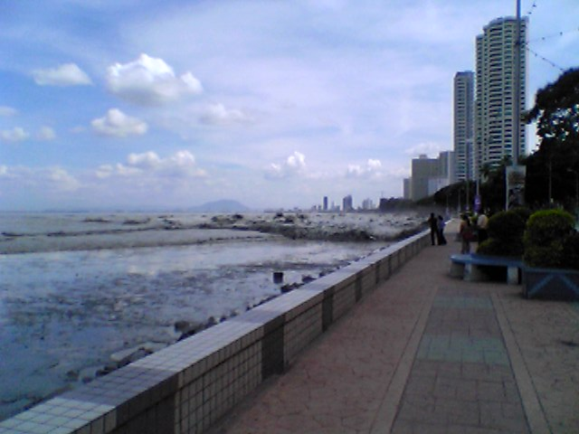
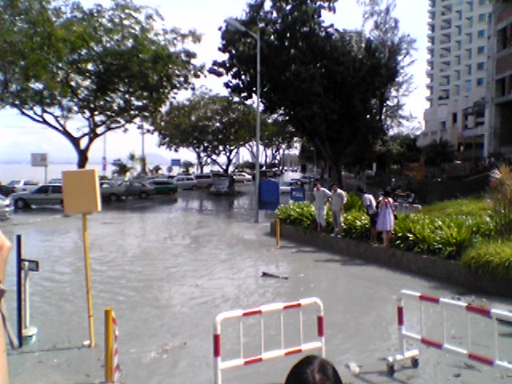
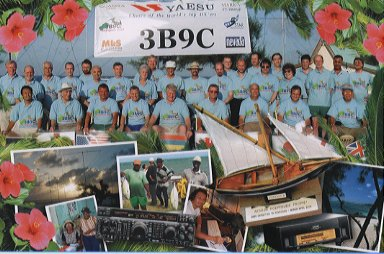
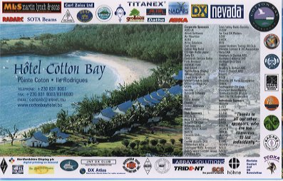

| 6m Today ! |
| 6m Today ! |
[Back Issues Dec.2004]
TIME:UTC(JST-09:00)
Report from JA1RJU (PM95sq)
31.Dec.2004(15:00c)
*ZL-TV 03:20- 45.24/25/26--
*VK-TV 04:00- 46.172/240 --
DU1EV/B 08:20- 50.008 CW Beacon strong! to 09:15z
30.Dec.2004(15:00b)
*ZL-TV 01:50- 45.240/250 --
29.Dec.2004(15:00b)
*BY-TV 03:40- 49.750 --
*9M-TV 03:40- 48.240 --
28.Dec.2004(15:00b)
*ZL-TV 06:40- 45.250 --
*VK-TV 06:40- 46.240 --
27.Dec.2004(15:00c)
*ZL-TV 04:40- 45.24/25/26--
*VK-TV 04:40- 46.172/240 --
*VK-TV 07:30- 46.172 -- strong!
|
◎ 12/26日にインドネシア・スマトラ島沖で発生したM 9.0の大地震による津波(TSUNAMI)でベンガル湾、
インド洋の周辺国に甚大な被害と死傷者を出した。
地震の揺れを直接感じなかったタイ(HS)、マレーシア(9M2)、インド(VU)、スリランカ(4S7)、モルディブ(8Q7)、
や遠くアフリカ大陸でも突然の津波来襲で多数の死者を出した。 日本人が多いタイの西海岸沿いのリゾート地、プーケット島周辺にも大きな津波が押し寄せ、 年末年始の休暇で訪れていた観光客も被害に遭っている。 マレーシアのペナン島在住の9M2KE・河野さんが、12/27日朝のNHKニュースで自宅から撮った津波の写真と共に、 インタビューを受けている映像が放映されていたのをご覧になった方も多いと思われます。 河野さんは海岸沿いのアパートにお住まいなので自宅は直接の被害は受けなかったものの、 現地時間の午後1時頃に津波が押し寄せ、アパートのプールサイドまで海水が上がって、 間一髪で助かったとリポートを頂きました。津波は近づくにつれてその威力の物凄さに驚いたとのこと。 9M2TO・出雲さんの無事も確認されています。 |


26.Dec.2004(15:00c)
*ZL-TV 06:00- 45.24/25/26--
25.Dec.2004(15:00b)
*ZL-TV 03:30- 45.24/25/26-- weak
*VK-TV 03:30- 46.172 --
24.Dec.2004(15:00d)
*ZL-TV 01:30- 45.250 -- weak
*VK-TV 01:30- 46.240 -- weak
*ZL-TV 06:00- 45.24/25/26--
*VK-TV 06:30- 46.172/240 --
VK3DUT 06:43 50.110/150 --
VK7RST 07:00- 50.298 CW Beacon
VK7XQ 07:06 50.109 CW
VK2XQ 07:10 50.110 SSB
VK3BQS 07:10 50.110 SSB
23.Dec.2004(15:00b)
*ZL-TV 05:00- 45.24/25/26--
*VK-TV 05:00- 46.172 --
22.Dec.2004(15:00b)
*ZL-TV 02:00- 45.24/25/26--
|
◎ 3B9C(Rodrigues Is)DX-PeditionのQSL発行状況 2004年3/19から4/12まで運用された3B9C(Rodorigues Is)のQSLは、12月20日現在で70,400枚の処理が終わった。 この数は全体の46%で、62.8%はダイレクトによる請求だった。 引き続き英国在住のメンバーにより残りのQSLの発行作業がおこなわれている。 [ご注意] 3B9CのQSLをJARL経由でJA1RJU宛に請求される局が居りますが、 QSLは全て英国から発行されています。下記のAddress宛にお送り下さい。 ○ Direct cards should be sent to this address:
3B9C
P.O. Box 73
Church Stretton
SY6 6WF
United Kingdom
|




21.Dec.2004(15:00b)
*VK-TV 05:20- 46.240 --
20.Dec.2004(15:00c)
*ZL-TV 04:00- 45.24/25/26--
*VK-TV 04:00- 46.172 --
*VK-TV 05:00- 46.240 --
19.Dec.2004(15:00d)
*ZL-TV 03:00- 45.24/25/26--
*VK-TV 04:00- 46.172/240 --
ZL3JT 04:11 50.110 CW
ZL3SIX 04:20- 50.040 CW Beacon
VK8RAS 04:45- 50.047 CW Beacon
DU1EV/B 05:20- 50.008 CW Beacon
18.Dec.2004(15:00b)
Report from JA1RJU (QM06cb)
17.Dec.2004(15:00b)
16.Dec.2004(15:00b)
KG6DX 11:36 50.*** JT65A EME(QK23-QM06=no decode)
Report from JA1RJU (PM95sq)
15.Dec.2004(15:00b)
*BY-TV 02:00- 49.750 --
14.Dec.2004(15:00c)
*ZL-TV 03:00- 45.24/25/26--
*VK-TV 03:00- 46.240 --
*VK-TV 05:00- 46.172 -- strong!
VK4RGG 05:20- 50.058 CW Beacon
13.Dec.2004(15:00c)
*VK-TV 02:00- 46.172 --
*BY-TV 10:00- 49.750 --
| ◎ 12月13-14日にピークを向かえる"ふたご座流星群"に期待が寄せられているが、 1時間に50個は見られると予想された流星も13日夜の東京の空では肉眼でほとんど確認出来なかった。 "新月"の夜空も東京では"月"以上に明るい環境では肉眼での観測は難しくなった。 夜間になって49.750MHzの大陸からのTVのVideoが"ヒューン、ヒュウーン"とSメーターを振らせているのが、 流星群到来の僅かな証か？ |
12.Dec.2004(15:00b)
11.Dec.2004(15:00b)
*VK-TV 04:20- 46.172 --
10.Dec.2004(15:00b)
*ZL-TV 03:30- 45.260 --
*ZL-TV 06:00- 45.240/250 --
*VK-TV 06:00- 46.172 --
09.Dec.2004(15:00b)
*ZL-TV 02:00- 45.24/25/26--
08.Dec.2004(15:00b)
*BY-TV 06:00- 49.750 --
07.Dec.2004(15:00c)
*ZL-TV 01:30- 45.24/25/26--
*BY-TV 02:00- 49.750 --
*VK-TV 02:40- 46.240 --
Report from JA1RJU (QM06cb)
06.Dec.2004(15:00b)
05.Dec.2004(15:00c)
K7BV/1 14:50 50.*** JT65A EME(FN31-QM06=one way)
|
◎ フィリピンに大きな被害を与え、その後方向転換し日本を伺っていた季節はずれの台風27号は、
東シナ海で熱帯低気圧に変わったが、この低気圧に伴う前線が5日未明から朝方に掛けて日本本土を通過、
関東全域にも暴風雨をもたらした。
東京では観測史上最高の風速40.2mを記録、千葉などでも早朝に風速47.8mの大型台風並みの強風が吹き荒れた。
この強風は関東地方では午前8時過ぎには収まったが、日中は南から吹き込む風で気温25度を超える暖かさとなった。 相変わらず50MHzのコンデションは落ち込んだまま。今日は45/46MHz帯のZL/VKのTVも入感していない。 |
Report from JA1RJU (PM95sq)
04.Dec.2004(15:00c)
*ZL-TV 03:30- 45.24/25/26--
*VK-TV 03:30- 46.172/240 --
03.Dec.2004(15:00d)
*VK-TV 02:00- 46.240 --
*ZL-TV 03:30- 45.240 --
02.Dec.2004(15:00d)
*VK-TV 03:00- 46.172/240 --
*ZL-TV 03:00- 45.24/25/26--
ZL3JT 03:21 50.110 CW
ZL3AAU 03:22 50.110 CW
ZL3SIX 03:30- 50.040 CW Beacon
*ZL-TV 03:30- 50.750 FM TV-Audio
ZL3JT 03:43 50.110 CW CQ strong!
VK4RGG 04:20- 50.058 CW Beacon
01.Dec.2004(15:00c)
*VK-TV 03:00- 46.172/240 --
*ZL-TV 03:00- 45.24/25/26--
*9M-TV 04:30- 48.240/260 --